Arduino IDE は標準では Wio LTE の開発環境が入っていませんが、環境設定から追加することができるため、その設定をおこないます。
できるようになる事
- Arduino IDE にて Wio LTE を用いた開発
このハンズオンでサポートしない事 (前提知識)
このコンテンツの進め方
ページの内容を読み、また作業を行ったら右下の［Next］を押して次のステップへ進みます。また、［Back］を使って戻ったり、左のナビゲーションメニューでもページの移動が可能です。
左上の［×］を押してコンテンツを終了することができます。また、ページを開きなおすことで再開できます。ページのアドレスはブラウザの［履歴］メニューを利用してください。
ハードウェア
品名 | 数量 | 価格 | 購入先 | 備考 |
M5Stack Basic | 1 | 3,575円 | M5Stack は Gray でも可です。その他のキットに同梱されている M5Stack でも OK です。 ※M5Stack Fire や M5GO は本ハンズオンではサポート外となています。 | |
USB Type-C ケーブル | 1 | ― | ― | M5Stack に付属しています。 |
(必要な方のみ) USB 変換アダプタ | ― | ― | ― | M5Stack とパソコンを USB ケーブルで接続する際に利用します。 1A 以上の電力が供給できるものを利用してください。(USB 3.0以上に対応していれば概ね安心です) |
※1 ※ 金額はレシピ作成時となります。ソラコムで販売している金額は税抜き・送料別です。
それ以外で必要となるもの
Arduino IDE がセットアップ済みのパソコン |
| |
M5StackはマイコンにESP32を使用しています。Arduino IDEは標準ではESP32の開発環境が入っていませんが、環境設定から追加することができるため、その設定をおこないます。
Arduino IDEのメニューから環境設定を開きます。
- Windows の場合: ［ファイル］>［環境設定］
- macOS の場合: ［Arduino］>［Preferences...］
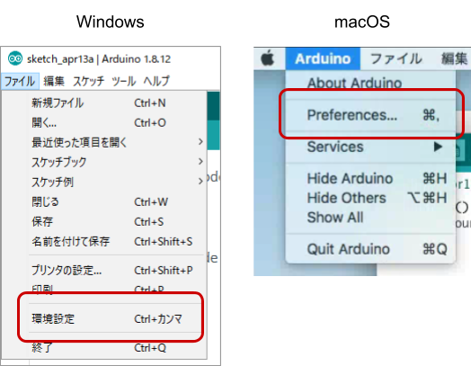
追加のボードマネージャのURL の  をクリックします
をクリックします
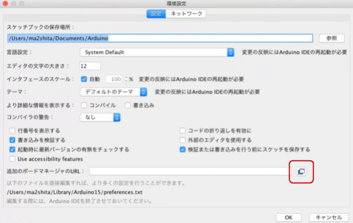
※ 画面は macOS ですが、Windows も同様です。
ボード定義の URL を入力します。
テキストボックスに以下の URL を入力します。
https://dl.espressif.com/dl/package_esp32_index.json
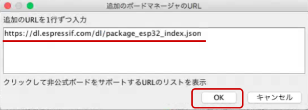
入力したら［OK］をクリックします。
環境設定の OK をクリックします。
環境設定のウィンドウに戻ってきたら［OK］をクリックします。
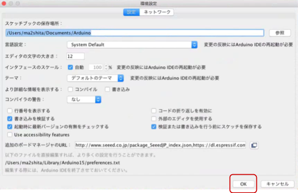
Arduino IDE の［ツール］>［ボード: ...］>［ボードマネージャ...］をクリックします。
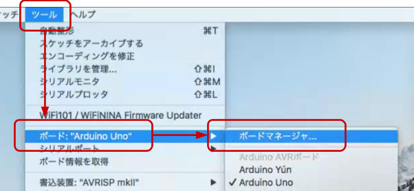
※ 画面は macOS ですが、Windows も同様です。
"esp32" をインストールする
ボードマネージャの一覧から esp32 (by Espressif Systems) を選んで［インストール］をクリックします。
バージョンはインストール時における最新バージョンを選んでください。
※ 約37MBのダウンロードとファイルの展開が行われます。
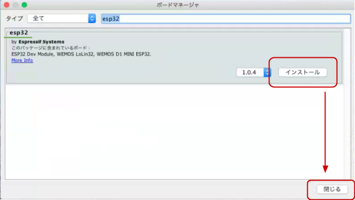
インストールが終了したら［閉じる］をクリックします。
以上で、ESP32 用ボード定義のインストールは完了です。
M5Stack用のライブラリをインストールします。
Arduino IDE の［スケッチ］>［ライブラリをインクルード］>［ライブラリを管理...］をクリックします。
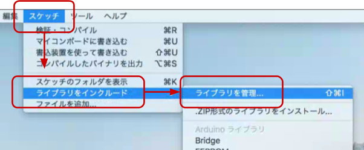
※ 画面は macOS ですが、Windows も同様です。
"M5Stack" をインストールします。
ライブラリマネージャの一覧から M5Stack (by M5Stack) を選んで［インストール］をクリックします。
バージョンはインストール時における最新バージョンを選んでください。
※ 約6MBのダウンロードが発生します。
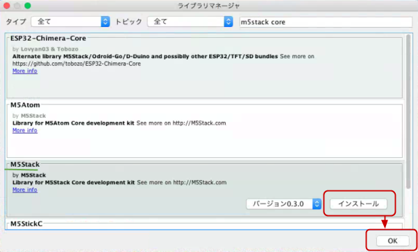
インストールが終了したら［閉じる］をクリックします。
※ 画面上は "OK" となっていますが、インストールが完了すると "閉じる" になります。
M5Stack へのプログラム書込みや、M5Stack の出力のモニタリングは仮想的なシリアルポートを通じて行います。
M5Stack 公式サイトのダウンロードページの CP2104 Driver をお使いのOSに合わせてダウンロードします。
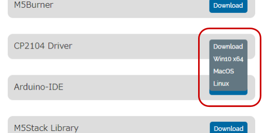
インストール: Windows の場合
ZIP ファイルを展開し、中の CP210xVCPInstaller_x64_v6.7.0.0.exe をダブルクリックして実行し、表示されるダイアログにしたがってインストールを完了してください。
インストール: macOS の場合
ZIP ファイルを展開し、中の SiLabsUSBDriverDisk.dmg をダブルクリックします。その後表示される Silicon Labs VCP Driver.pkg をダブルクリックして、表示されるダイアログにしたがってインストールを完了してください。
ここまでで M5Stack の開発環境の準備は完了です。
ここまでのセットアップが正常にできているか、実際にサンプルのプログラム (スケッチと呼ばれる) をコンパイルしてみます。
ここでは M5Stack 実機はまだ使用しません。
ボード定義を "M5Stack-Core-EPS32" に変更する
［ツール］>［ボード: ...］>［ESP32 Arduino］>［M5Stack-Core-ESP32］をクリックします。
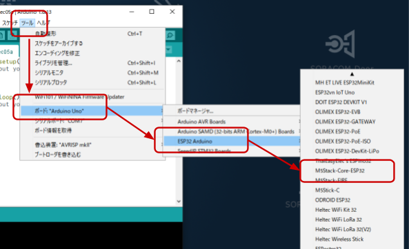
※ 画面は Windows ですが macOS も同様です。
サンプルスケッチ "HelloWorld" を開く
［ファイル］>［スケッチ例］>［M5Stack］>［Basics］>［HelloWorld］をクリックします。
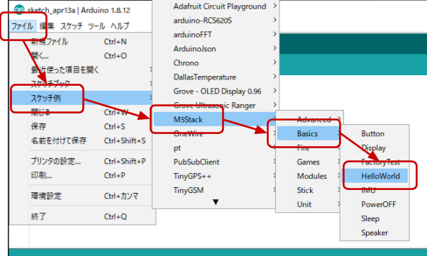
※ 画面は Windows ですが macOS も同様です。
コンパイルをする
新しく開いたウィンドウでボタンをクリックします。スケッチのコンパイルが始まります。
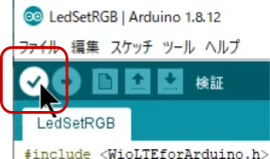
ウィンドウの下部で進行状況が確認できます。
進行状況の部分にコンパイルが完了しました。と表示されれば、開発環境は正しくセットアップできています。
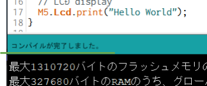
エラー発生時の対処
コンパイル時にエラーが発生すると以下のように表示されます。
ここまでのセットアップで不備が無かったか、再度確認してください。
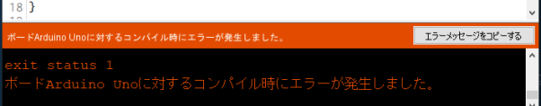
※ エラーメッセージは一例です。他にも複数のパターンがあります。
いよいよ M5Stack 本体でスケッチを実行します。
M5Stack をパソコンにつなげる
M5Stack 本体と USB ケーブルを用意して接続してください。
この時 M5Stack の電源が自動的に ON になる場合もありますが特に問題ありません。
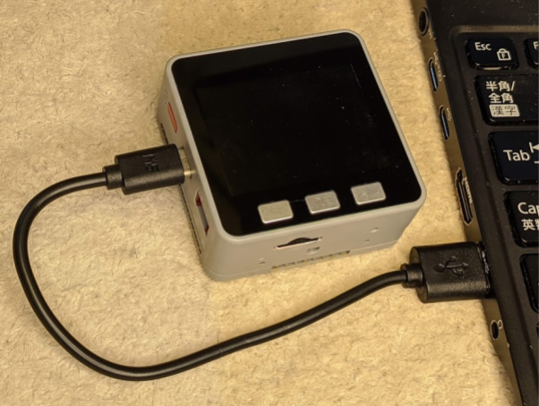
サンプルスケッチ "HelloWorld" を開く
［ファイル］>［スケッチ例］>［M5Stack］>［Basics］>［HelloWorld］をクリックします。
マイコンボードに書き込む
"HelloWorld" を表示しているウィンドウで ボタンをクリックします。
ボタンをクリックします。

スケッチのコンパイルと、スケッチの書き込みが始まります。
ボードへの書き込みが完了しました。と表示されたら正常終了です。
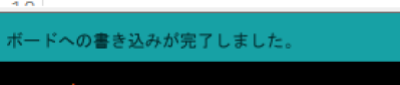
エラーが発生した場合
そのポートは存在しないか、ボードが接続されていません | 複数のシリアルポートが存在する場合に表示されることがあります。 M5Stack が接続されているシリアルポートを指定するようにしてください。(シリアルポートをいくつか試してみるのも一つの方法です。特に破損するようなことはありません) シリアルポートは［ツール］>［シリアルポート: ...］で変更できます。 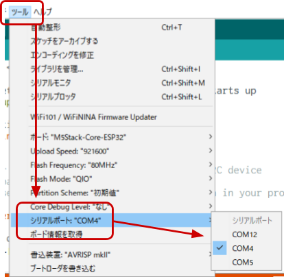 ※ この例では M5Stack は COM12 として認識されているため COM12 への変更が必要。 macOS の場合は |
Failed to connect to ESP32 | 何らかの理由で M5Stack が認識されなかった可能で氏があります。 M5Stack の USB ケーブルを挿し直してみてください。 |
実行の様子
書き込みが完了すると M5Stack の電源が自動的に入り直し(リセット)され、中のスケッチが実行されます。
M5Stack の画面に HelloWorld と表示されれば成功です。
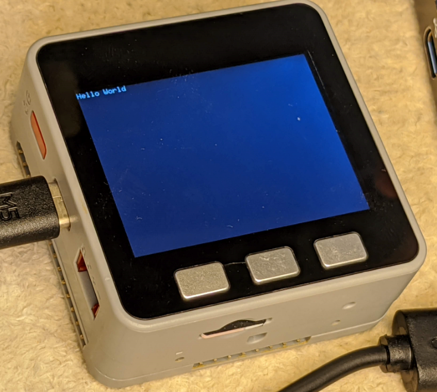
その他のサンプルスケッチを実行してみる
［ファイル］>［スケッチ例］>［M5Stack］>［Basics］>［Display］では以下のように表示されます。
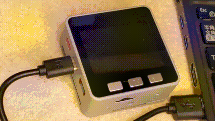
以上で M5Stack 開発環境を Arduino IDE への追加するハンズオンは終了です。